Илья́ Вячесла́вович О́сипов (род. 1 мая 2005,
Орехово-Зуево, Россия) — российский киберспортсмен
в Counter-Strike 2 играющий под псевдонимом m0NESY.

Николай Вильсхёй Редц (дат. Nicolai Hvilshøj Reedtz,
род. 8 сентября 1995, Вайле) — профессиональный датский
киберспортсмен, более известный под псевдонимом device.
Играет в Counter-Strike: Global Offensive, ранее в Counter-Strike:
Source. На данный момент играет в датской команде Astralis
в роли капитана, чаще всего вооружаясь снайперской винтовкой AWP.
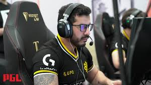
Марсело Аугусто Давид (род. 31 октября 1994 года[1]),
более известный как coldzera — бразильский профессиональный
игрок в Counter Strike: Global Offensive. На данный момент
состоит в организации RED Canids.
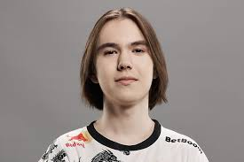
Данил Крышковец (род. 25 января 2007, Томск),
более известный под ником donk, — российский киберспортсмен
по Counter-Strike: Global Offensive и Counter-Strike 2,
чемпион мира по Counter-Strike 2, выступающий за команду Team Spirit.
 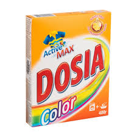
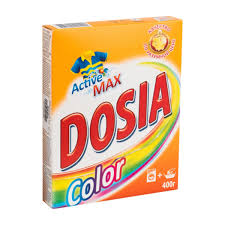
Столяров Михаил Леонидович (род. 19 июня 1988 года) —
профессиональный российский киберспортсмен, выступал под ником «Dosia».
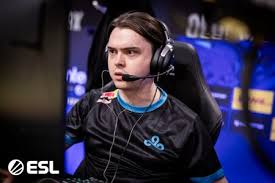
Дени́с Раи́левич Шари́пов[1] (род.
2 сентября 1998, Казань), также известный как
«electronic», — профессиональный российский киберспортсмен,
один из лучших игроков мира в дисциплине Counter-Strike
: Global Offensive[2]. Чемпион ESL One: Cologne 2018 и
IEM Katowice 2020, серебряный призёр FACEIT Major: London
2018 в составе украинской команды Natus Vincere[3]. В 2021
году Денис Шарипов в составе Natus Vincere выиграл Intel
Grand Slam и выиграл за игровой сезон 4 турнира ESL. 7 ноября
2021 Денис выиграл турнир PGL Major Stockholm 2021. 19 декабря 2021
года Денис выиграл Blast Premier World Final.
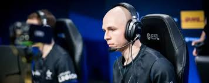
Джонатан "EliGE" Яблоновски, родившийся
16 июля 1997 года, - американский профессиональный
игрок в Counter-Strike 2 и бывший игрок Counter-Strike:
Global Offensive польского происхождения.
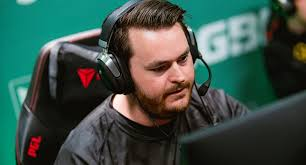
Адам Фриберг (швед. Adam Friberg, род.
19 октября 1991, Швеция) — киберспортсмен,
играющий под никнеймом «friberg». До перехода
в CS:GO продолжительное время выступал в различных
шведских командах по Counter-Strike: Source.
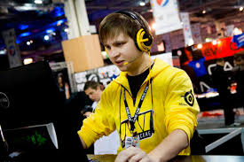
Егор Вадимович Маркелов
(12 февраля 1988; Днепропетровск)
— украинский профессиональный киберспортсмен
в дисциплине CS. Лучший игрок мира в 2010 году
по версии сайта HLTV.org[1]. Участник первых
двенадцати мейджоров по CSGO. Чемпион Европы
Wesg 2017 года в составе Team Ukraine.
Не участвовал в профессиональных матчах с 2018 года.

Олоф Кайбер Густаффсон (швед. Olof Kajbjer Gustafsson;
род. 31 января 1992) — шведский киберспортсмен по Counter-Strike,
более известный под никнеймами olofmeister и olof.
Кайбер известен своими выступлениями за команду fnatic
, с которой стал двухкратным победителем мейджоров, и
FaZe Clan. Признан лучшим игроком в CS:GO за 2015 год
по версии портала HLTV.
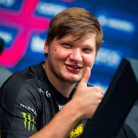
Алекса́ндр Оле́гович Ко́стылев (укр. Олександр Олегович Костилєв;
род. 2 октября 1997, Киев) — украинский киберспортсмен, более известный
под ником s1mple. Лучший игрок в дисциплине Counter-Strike: Global
Offensive по версии портала HLTV.org по итогам 2018, 2021 и 2022 годов.
В 2021 году в составе Natus Vincere стал победителем и MVP PGL Major Stockholm 2021.
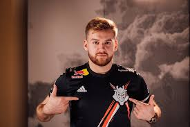
Никола Ковач (босн. Nikola Kovač, род. 16 февраля 1997, Брчко)
— боснийский киберспортсмен по Counter-Strike 2, более известный под ником «NiKo».
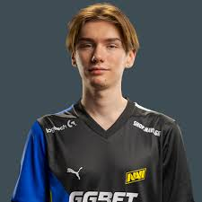
Игорь «w0nderful» Жданов (укр. Ігор Жданов; род.
14 декабря 2004 года, Одесса, Украина[1]) — украинский
киберспортсмен, игрок в Counter-Strike: Global Offensive и
Counter-Strike 2. Чемпион мира по Counter-Strike 2 (PGL CS2 Major
Copenhagen 2024)[3]. Мастер спорта международного класса. На данный
момент выступает за организацию Natus Vincere.

Матье Эрбо (фр. Mathieu Herbaut; род. 9 ноября 2000 года; Ланс)
— французский киберспортсмен по Counter-Strike: Global Offensive
и Counter-Strike 2, более известный под псевдонимом ZywOo.
Играет в команде Team Vitality на позиции снайпера. Лучший
игрок по итогам 2019, 2020 и 2023 годов по версии портала HLTV.org